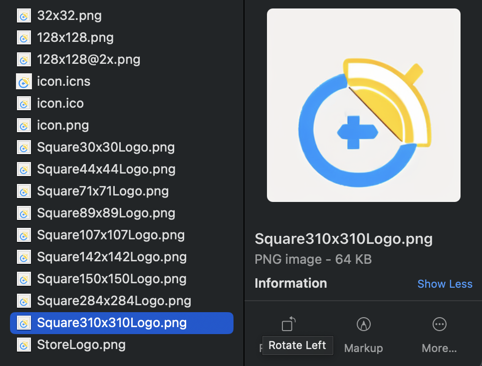

Tauri: 制作icon
文章目录
前言
应用的门面是图标，为应用创建一个有意思的图标可以提高应用的辨识度。
但是为应用制作一个图标太麻烦了，每个平台还不一样，各种格式都有。
我们又不是专业的设计师，没办法做那么好，不过好在 Tauri 提供了一个简便（偷懒）的方式，可以用一个图标，帮我们生成各种尺寸，各个平台，各种格式的图标。
制作图标
首先要准备一个图标，命名为 app-icon.png ，放到项目的根目录，然后执行如下命令
|
|
默认会在 src-tauri/icons 中生成，如下所示

高级玩法
上面制作图标需要放到指定位置，如果想在其它目录用就不行了，经过我一番研究发现可以使用 tauri-cli 来规避这个问题
使用之前需要安装一下 tauri-cli ，如下
|
|
安装好之后就可以使用了
|
|
icon.png是原图-o是输出目录
执行后的效果是一样的，但是却能在任何地方使用，不需要依赖 tauri 的目录结构，灵活了许多